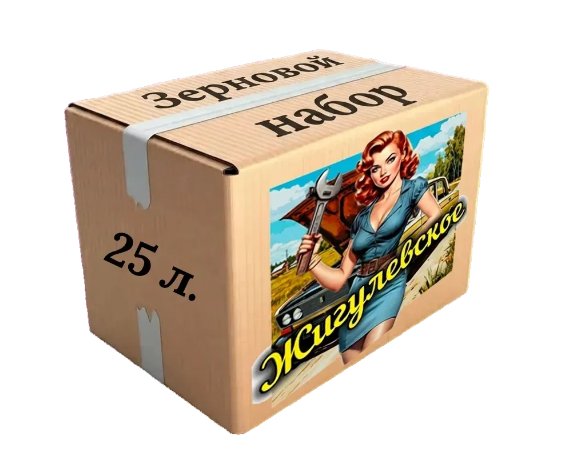
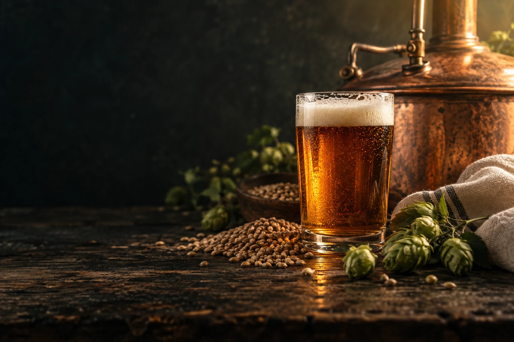
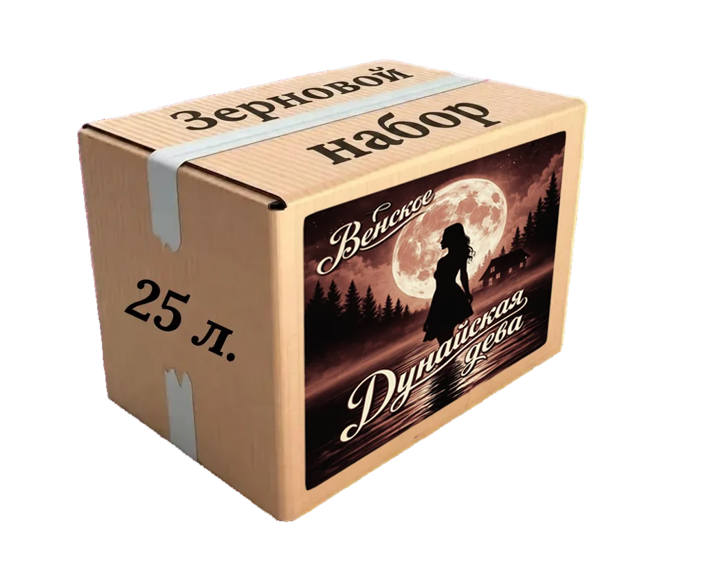
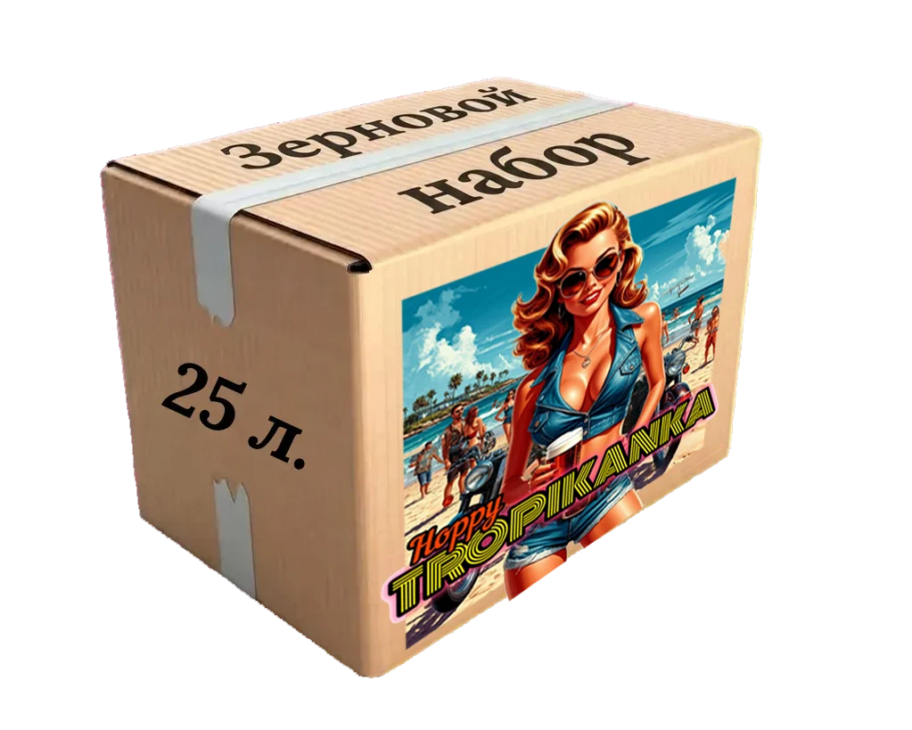
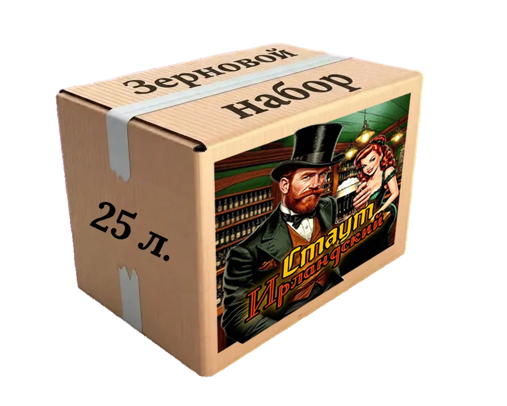
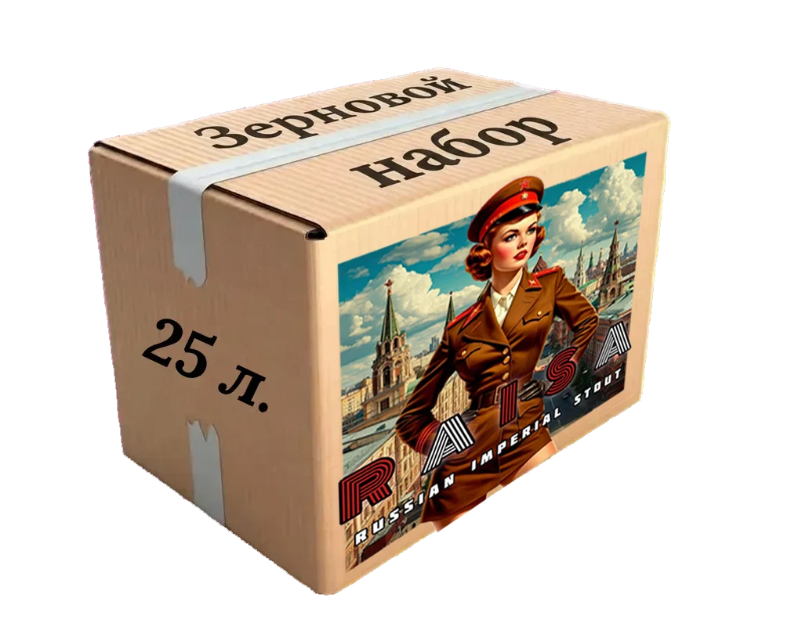
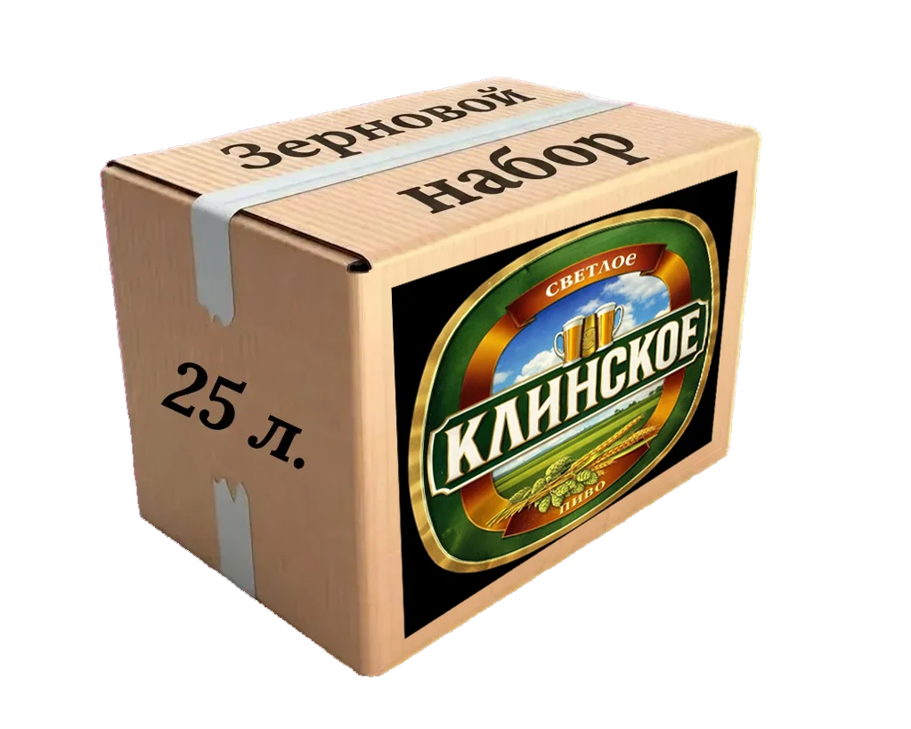

Знакомые названия

25 ЛИТРОВ
Хорошее пиво начинается с любопытства.
Соберите свою варку — от первого
зерна до собственного рецепта.
МАСТЕРСКАЯ БОДРЕЕВА
Наборы помогают начать. Рецепты — пробовать новое.
Знания превращают каждую варку в ваш собственный опыт.
01 / ВАША ТОЧКА СТАРТА
Опыт не обязателен.
Интерес — отличное начало.
02 / ИНГРЕДИЕНТЫ ДЛЯ ВАШЕЙ ИДЕИ
10 зерновых наборов.
Каждый рассчитан на 25 литров.
Показано 10 наборов

25 ЛИТРОВ 25 ЛИТРОВ
25 ЛИТРОВ
25 ЛИТРОВ 25 ЛИТРОВ
25 ЛИТРОВ
25 ЛИТРОВ
25 ЛИТРОВ
25 ЛИТРОВ 25 ЛИТРОВ
25 ЛИТРОВ
25 ЛИТРОВ 25 ЛИТРОВ
25 ЛИТРОВТакого названия нет. Попробуйте другой запрос или категорию.
КОРОБКА № 1 / СВОБОДА ЭКСПЕРИМЕНТА
В этой коробке есть ингредиенты и инструкция-направление. Каким станет пиво — лёгким или крепким, горьким или ароматным — решаете вы.
 ОДИН НАБОР. РАЗНЫЕ ИСТОРИИ.
ОДИН НАБОР. РАЗНЫЕ ИСТОРИИ.03 / ЗНАНИЯ, КОТОРЫЕ ОСТАЮТСЯ С ВАМИ
BODREEVSHOW / СООБЩЕСТВО
Смотрите варки на YouTube, следите за обновлениями в Telegram и делитесь своими рецептами. Хорошим идеям нужна компания.
Мерч Гильдии пивоваров ↗04 / БЕЗ ЛИШНИХ СЛОЖНОСТЕЙ
Ответы на вопросы, с которых
обычно начинается пивоварение.
Посмотрите материал «Варим пиво из зерна» и определитесь с оборудованием. Наборы подходят начинающим при наличии минимального оборудования. Если остаются вопросы, напишите — обсудим вашу первую варку.
Нет, это зерновой набор для домашнего пивоварения. Пиво вы варите самостоятельно. Состав конкретного набора и необходимое оборудование уточните перед заказом.
На 25 литров готового пива. Другой объём можно согласовать индивидуально.
Да, на оригинальном сайте предусмотрены индивидуальные наборы по договорённости.
В прохладном, сухом и тёмном месте.
Выберите набор и подготовьте письмо. Наличие, состав, доставку и оплату согласуйте напрямую с BodreevShow. На тестовом сайте платежей нет.